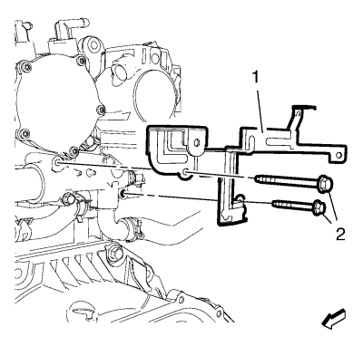
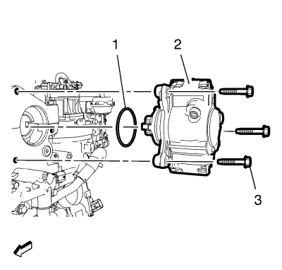

Sustitución de la bomba de inyección de combustible
Herramientas especiales
| • | EN-796 Herramienta de desmontaje - Acoplamiento rápido |
| • | EN-807 Tapones de cierre |
| • | EN-6015 Tapones de cierre |
Si desea informarse sobre herramientas regionales equivalentes, consultar Herramientas especiales .
Procedimiento de desmontaje
- Desmontar la pantalla de protección del motor. Consultar Sustitución del protector del motor .
- Desconecte el cable negativo de la batería. Consultar Desconexión y conexión del cable negativo de la batería .
- Desmonte el módulo de control del motor. Consultar Sustitución del módulo de control del motor .

- Retire el tornillo del soporte del tubo flexible delantero de salida del refrigerador de aire de carga (2).
- Afloje la abrazadera que une el tubo flexible delantero de salida del refrigerador de aire de carga al tubo flexible trasero (4).
- Suelte el tubo flexible delantero de salida del refrigerador de aire de carga (1) y la abrazadera (4) del tubo flexible trasero de salida del refrigerador de aire de carga (3). Cuelgue el tubo flexible delantero de salida del refrigerador de aire de carga (1).

- Suelte los 4 clips de retención del mazo de cables del motor del soporte del mazo de cables del motor.
- Retire los 2 tornillos del adaptador de la salida de agua del motor y del soporte del mazo de cables del motor (2) del adaptador de la salida de agua del motor.
- Retire el soporte del mazo de cables del motor (1) del adaptador de la salida de agua del motor.

- Desemborne el enchufe del mazo de cables de la bomba de combustible de inyección de combustible (4).
- Desmonte el tubo flexible de retorno de combustible de la inyección de combustible (3).
- Desacople el tubo delantero de alimentación de combustible (5) y suéltelo del clip del tubo delantero de retorno de combustible. Consultar Servicio del adaptador de conexión rápida del collarín plástico .
- Cierre el tubo de retorno de combustible delantero con los tapones de cierre EN-6015.
- Desacople el tubo delantero de retorno de combustible (2) con la herramienta de desmontaje EN-796. Consultar Servicio del adaptador de conexión rápida del collarín plástico .
- Retire el tubo (1) de alimentación de combustible de la inyección. Consultar Sustitución del tubo de alimentación de la válvula de inyección de combustible - Bomba de inyección del depósito a tubo de distribución de combustible .
- Cierre el tubo de alimentación de combustible de inyección de combustible con los tapones de cierre EN-807.

- Retire los 3 tornillos de la bomba de inyección (3).
- Retire la bomba de inyección (2) y la junta (1).
Procedimiento de montaje
- Monte la bomba de inyección (2) y una junta NUEVA (1).
Precaución:Consulte Precaución con las fijaciones en la sección Prólogo.
- Monte los 3 tornillos de la bomba de inyección (3) y apriételos a 25 N·m (18 lib. pie).
- Retire los tapones de cierre EN-807 del tubo de alimentación de combustible de la válvula de inyección de combustible (1).
- Coloque el tubo de alimentación de combustible de la inyección (1). Consultar Sustitución del tubo de alimentación de la válvula de inyección de combustible - Bomba de inyección del depósito a tubo de distribución de combustible .
- Retire los tapones de cierre EN-6015 del tubo delantero de retorno de combustible (2).
- Conecte el tubo delantero de retorno de combustible (2). Consultar Servicio del adaptador de conexión rápida del collarín plástico .
- Acople el tubo delantero de alimentación de combustible (5) y fíjelo al clip del tubo delantero de retorno de combustible. Consultar Servicio del adaptador de conexión rápida del collarín plástico .
- Monte el tubo flexible de retorno de combustible de la inyección de combustible (3).
- Emborne el enchufe del mazo de cables de la bomba de inyección de combustible (4).
- Monte el soporte del mazo de cables del motor (1) en el adaptador de la salida de agua del motor.
- Monte los 2 tornillos del adaptador de la salida de agua del motor y del soporte del mazo de cables del motor (2) en el adaptador de la salida de agua del motor y apriételos a 10 N·m (89 lib. pulg.).
- Fije los 4 clips de retención del mazo de cables del motor al soporte del mazo de cables del motor.
- Monte el tubo flexible delantero de salida del refrigerador de aire de carga (1) y la abrazadera (4) en el tubo flexible trasero de salida del refrigerador de aire de carga (3).
- Monte el tornillo del soporte del tubo flexible delantero de salida del refrigerador de aire de carga (2) y apriételo a 9 N·m (80 lib. pulg.).
- Apriete la abrazadera que une el tubo flexible delantero de salida del refrigerador de aire de carga al tubo flexible trasero (4) a 4 N·m (35 lib. pulg.).
- Monte el módulo de control del motor. Consultar Sustitución del módulo de control del motor .
- Conecte el cable negativo de la batería. Consultar Desconexión y conexión del cable negativo de la batería .
- Monte el protector del motor. Consultar Sustitución del protector del motor .
| © Copyright Chevrolet. All rights reserved |